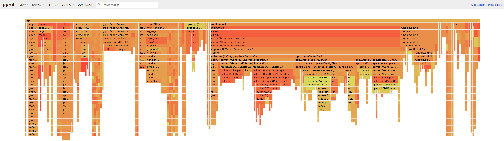
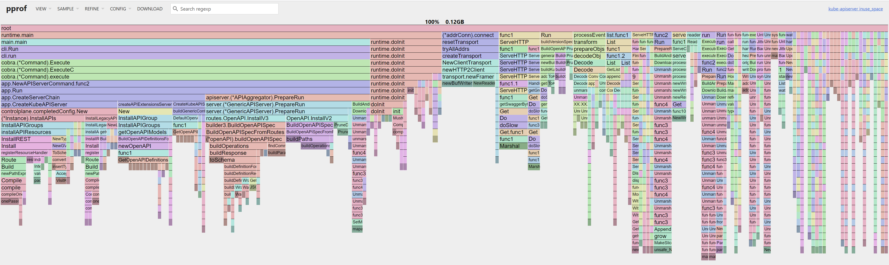

本文主要阐述kube-apiserver kubelet在线调试方法。
热更新 kubernetes 组件的日志级别
kube-apiserver/kubelet 等组件通常使用 -v 来设置日志级别，默认的日志级别是2，下面是动态热更新日志级别到4的操作步骤：
1
2
3
4
5
6
7
8
9
10
11
12
|
# 使用 kube-apiserver 的 http 访问代理
$ kubctl proxy
Starting to serve on [::]:8001
# 更新 kube-apiserver 组件的日志级别
$ curl -X PUT 127.0.0.1:8001/debug/flags/v -d "4"
successfully set klog.logging.verbosity to 4
# 更新 kubelet 组件的日志级别
$ export NODENAME=hao
$ curl -X PUT 127.0.0.1:8001/api/v1/nodes/${NODENAME=hao}/proxy/debug/flags/v -d "4"
successfully set klog.logging.verbosity to 4
|
pprof 调试
pprof是google官方提供的golang 内存/CPU/goroutine 分析工具，主要用于性能分析。在 kubernetes 1.18+ 的版本中， kube-apiserver 已默认开启 pprof，参数如下所示：
1
|
--profiling Enable profiling via web interface host:port/debug/pprof/ (default true)
|
开启 kube-apiserver 的 http 访问代理：
1
2
|
$ kubectl proxy --address='0.0.0.0' --accept-hosts='^*$'
Starting to serve on [::]:8001
|
以使用go tool pprof工具直接分析
1
2
3
4
5
6
7
8
9
10
11
12
13
14
15
16
17
18
19
20
21
22
|
$ go tool pprof 127.0.0.1:8001/debug/pprof/heap
Fetching profile over HTTP from http://127.0.0.1:8001/debug/pprof/heap
Saved profile in /root/pprof/pprof.kube-apiserver.alloc_objects.alloc_space.inuse_objects.inuse_space.001.pb.gz
File: kube-apiserver
Type: inuse_space
Time: Aug 23, 2023 at 3:06pm (CST)
Entering interactive mode (type "help" for commands, "o" for options)
(pprof) top
Showing nodes accounting for 37.60MB, 30.06% of 125.07MB total
Dropped 373 nodes (cum <= 0.63MB)
Showing top 10 nodes out of 377
flat flat% sum% cum cum%
5.64MB 4.51% 4.51% 7.16MB 5.73% encoding/json.Marshal
5.01MB 4.01% 8.52% 5.01MB 4.01% regexp.onePassCopy
4.51MB 3.61% 12.13% 6.01MB 4.81% k8s.io/kube-openapi/pkg/builder.(*openAPI).buildOperations
4.26MB 3.40% 15.53% 4.26MB 3.40% google.golang.org/grpc/internal/transport.newBufWriter
3.52MB 2.81% 18.34% 3.52MB 2.81% regexp/syntax.(*compiler).inst
3.51MB 2.81% 21.15% 3.51MB 2.81% reflect.unsafe_NewArray
3.50MB 2.80% 23.95% 3.50MB 2.80% k8s.io/kube-openapi/pkg/builder3.(*openAPI).buildParameter
3.09MB 2.47% 26.43% 3.09MB 2.47% bufio.NewReaderSize
2.50MB 2.00% 28.43% 2.50MB 2.00% reflect.New
2.05MB 1.64% 30.06% 8.06MB 6.44% k8s.io/kube-openapi/pkg/builder.(*openAPI).buildPaths
|
也可以使用 Web 页面查看火焰图等信息（需要安装graphviz包）：
1
2
3
4
5
|
$ go tool pprof -http 0.0.0.0:8082 127.0.0.1:8001/debug/pprof/heap
Fetching profile over HTTP from http://127.0.0.1:8001/debug/pprof/heap
Saved profile in /root/pprof/pprof.kube-apiserver.alloc_objects.alloc_space.inuse_objects.inuse_space.003.pb.gz
Serving web UI on http://0.0.0.0:8082
http://0.0.0.0:8082
|
浏览器查看火焰图1：

浏览器查看火焰图2：
